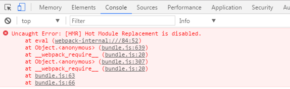
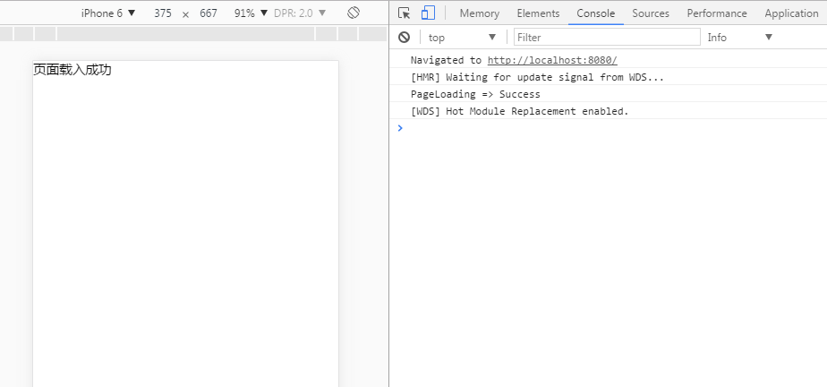

webpack-dev-server配置指南（使用webpack3.0）
最近正在研究webpack，听说webpack可以自己搭建一个小型的服务器（使用过vue-cli的朋友应该都见识到过），所以迫不及待的想要尝试一下。不过，在实际操作中发现，用webpack搭建服务器仍有不少坑，一方面是由于自己对文档的不熟悉，不了解webpack-dev-server的运作模式；另一方面，在翻阅了不少博客和文章后，发现不少配置实际上都跑不起来（有可能是版本的原因，也有可能是我自己配置的原因）。所以我打算用webpack3.0把dev-server跑起来给大家演示一遍，顺便把一些配置和原理给大家讲清楚，这样就省的绕弯路了。
这里我就默认大家都已经安装了webpack以及自己需要使用的loader和plugins，由于webpack-dev-server是个独立的npm包，所以我们需要在npm下安装它：
npm install webpack-dev-server --save-dev
之后我们就可以在webpack.config.js中进行配置：

const path = require("path");
module.exports = {
entyr:{
....... //设置入口文件
},
output:{
....... //设置出口文件
},
module:{
....... //配置loader，注意使用rules而不是loaders
},
plugins:[
....... //注意是数组
],
devServer:{
//我们在这里对webpack-dev-server进行配置
}
}
devServer中常用的配置对象属性如下：
1. contentBase："./" // 本地服务器在哪个目录搭建页面，一般我们在当前目录即可；
2. historyApiFallback：true // 当我们搭建spa应用时非常有用，它使用的是HTML5 History Api，任意的跳转或404响应可以指向 index.html 页面；
3. inline：true // 用来支持dev-server自动刷新的配置，webpack有两种模式支持自动刷新，一种是iframe模式，一种是inline模式；使用iframe模式是不需要在devServer进行配置的，只需使用特定的URL格式访问即可；不过我们一般还是常用inline模式，在devServer中对inline设置为true后，当我们启动webpack-dev-server时仍要需要配置inline才能生效，这一点我们之后再说；
4. hot：true // 启动webpack热模块替换特性，这里也是坑最多的地方，不少博客都将hot设置了true，我们姑且也设置为true，之后再看；
5. port：端口号(默认8080) // 这就不用我多说了吧；
事实上大概常用的配置也就这样，为了方便，我们在packjson中对webpack-dev-server的的启动进行一下设置：
"scripts": { ...... ...... "start":"webpack-dev-server --inline" },
别忘了在devServer中设置inline：true后这里也要设置一下！
这时我们打包后再运行服务器后应该发现index.html页面已经展示了，打包好后的js文件虽然出现在了src上，但并没有显示，打开控制台会发现如下报错：

控制台显示：Hot Module Replacement is disabled；
奇怪？我们之前不是在devServer中设置了hot为true了吗？事实上，虽然不知道为什么，但是目前来说hot这个属性已经没有用了，使用热模块的话我们需要用到一个叫webpack.HotModuleReplacementPlugin的插件。所以我们的webpack.config.js需要加上这些：

const path = require("path");
const webpack = requier ("webpack");
module.exports = {
entyr:{
....... //设置入口文件
},
output:{
....... //设置出口文件
},
module:{
....... //配置loader，注意使用rules而不是loaders
},
plugins:[
new webpack.HotModuleReplacementPlugin()
....... //注意是数组
],
devServer:{
contentBase: "./",
historyApiFallback:true,
inline:true,
hot:true
}
}
这时我们再在bash上运行npm run start后发现服务器就搭建完成了！

另外，还有一点值得注意的就是，webpack-dev-server所使用的bundle.js文件并不是webpack.config.js中output打包生成的bundle.js，而是使用webpack-dev-server自己打包生成的，这个文件不存在与output或其他路径中，而是存到了内存中，事实上webpack-dev-server所使用的那个bundle.js我们是看不到的！